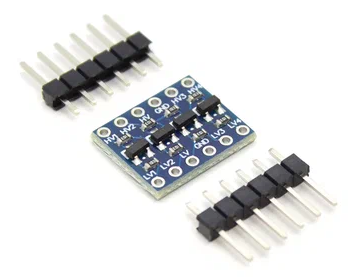

В синтезаторах Yamaha PSS-E30 и PSS-F30 имеется позможность подключить USB-разъем, через который данный инструмент становится MIDI-клавиатурой. Дело в том, что данный синтезатор сделан на том же чипсете YMW830-V что и Yamaha PSS-A50, а у этого A50 есть USB-разъем. Просто в PSS-E30/F30 на плате не распаяна сама микросхема согласования входов USB-интерфейса, и самого разъема нет.
То есть, у микросхемы центрального процессора, который представляет собой систему-на-кристалле (SOC) имеются 3-х вольтовые вывода последовательного интерфейса Rx/Tx. К ним нужно просто подключить гнездо USB через любой дешевый преобразователь уровня 5В <-> 3В.

Преобразователь логических уровней 5V/ 3V, 4-х канальный
В итоге получится USB порт, который будет видеться в компьютере как MIDI-устройство:
"USB MIDI Interface 0" / "USB MIDI Interface 1"
Как выяснили исследователи, прошивка (т.е. внутреннее содержимое ПЗУ) ямаховского SOC-чипа имеет объем 48Кб, и абсолютно одинакова для всех перечисленных моделей:
По всей видимости, в 48Кб ПЗУ записан код базовой управляющей системы. И модели 30 отличаются от A50 только внешней (относительно SOC) флешкой, на которой записаны различающиеся в данных моделях блоки исполняемого кода, разные звуки и мелодии.
Кстати, по такому самодельному порту доступен внутренний низкоуровневый шелл, который, видимо, имеется на любых синтезаторах всей линейки PSS/PSR.